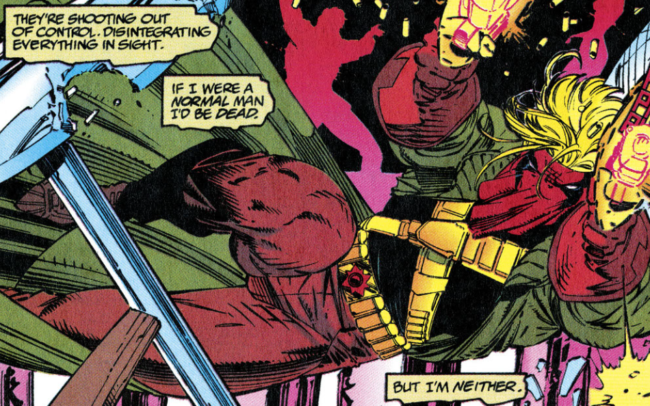

Cole Cash a.k.a Grifter
I'm a Father-Confessor with a gun-barrel confessional and a fearful penance.
Before he was Grifter, he was known as Cole Cash.
He ran away from his home at a very young age and turned towards a life of crime to survive. That time of his life ended with his arrest and subsequent recruitment from International Operations (I/O) where he developed strong marksman skills and steadily became a reliable soldier.
During his time with I/O, Cole joined a Black Ops. team known as Team 7. There he undertook top secret missions under the code name, Deadeye. However, on one mission I/O deliberately exposed Team 7 to a foreign chemical called Gen Factor, in an attempt to develop a superhuman strike team. This was done without the team's knowledge or consent.
Unlike the previous experiments, Team 7 (Save for Michael Cray) quickly developed psionic abilities but it came at the cost of their sanity. Suspicious of I/O and its intentions, Cole began to raise questions and once I/O had fully betrayed Team 7, he led the team to unite their abilities and hide from I/O. This was only a temporary measure and the team reunited for a number of missions.
Slowly, his psionic powers began to dampen but he retained the physical aspects of the Gen Factor. He continued to work for I/O for a bit longer than other members but eventually he too left I/O. This is when he met Zealot, a Kherubim warrior, who taught him the ways of the Coda which helped his mental health and locked his powers. While they did share a romantic relationship, it ended amicably. Cole still harbors romantic love for her but Zealot's feelings are not as explicit.
Cole remains by Zealot's side under the alias Grifter, joining her and the WildC.A.Ts in the battle against the Daemonites.
Like I always told ya, Zealot, there are things worth fighting for and things worth dying for. The trick is in deciding on the right ones.
Signature Items:
- Mask
- Dual VAD PP30s
- Green Trenchcoat
On Cole Cash's philosophies...
Wildstorm Universe Readings:
- First Appearance: WildC.A.Ts: Covert Action Teams (1992) #1
- First Solo Series: Grifter (1995-1996) #1-10
- First Team 7 Series: Team 7(1994-1995) #1-4